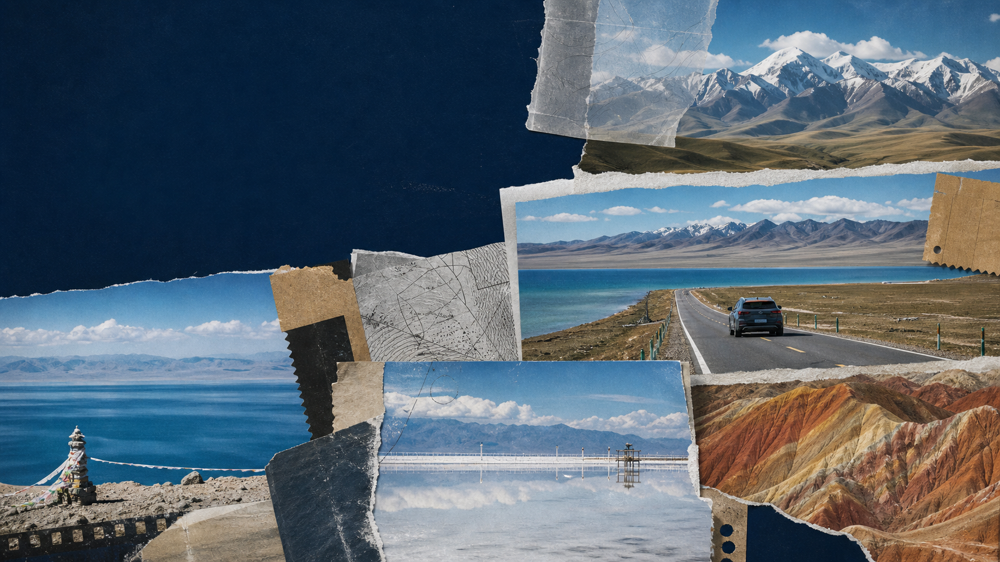
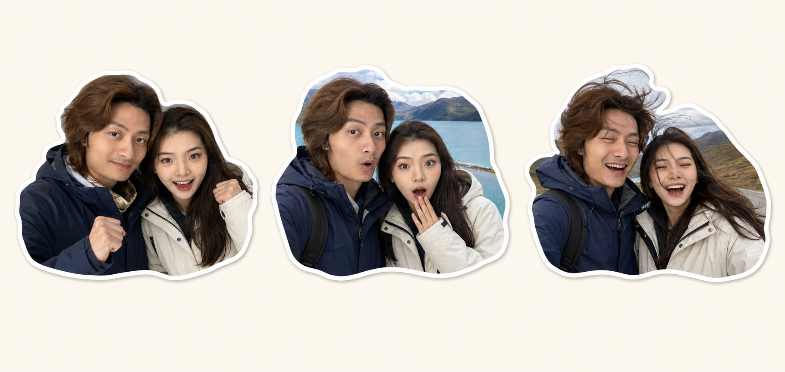

Flight · 9/3
成都天府 → 西宁曹家堡
首选 17:25 左右出发、19:10 左右落地的直飞。若下班赶不及，就筛选 18:00 后直飞，以到达不晚于 21:00 为佳。
- 目标价：含税不高于 ¥850/人/程可以下手
- 两人往返合理区间：¥2,800 - ¥4,400
- 去程优先 TFU，回程同时比较 TFU 与 CTU

9 月 3 日晚飞西宁，9 月 8 日晚回成都。默认走张掖版小环线，也准备一条少开车的 4 日轻松线。
主线把张掖七彩丹霞纳入环线，风景层次最完整。轻松线删去张掖，把时间留给青海湖北岸和祁连，日均驾驶更友好。
湖泊、盐湖、雪山草原、丹霞一次集齐。5 个驾驶日里只有茶卡至祁连偏长，其余留得出拍照和吃饭时间。
航班时刻来自当前可查的夏秋航季信息，票价和最终班次会动态变化。页面给出适合你们下班出发的时段与入手线，不把缓存价格冒充实时成交价。
首选 17:25 左右出发、19:10 左右落地的直飞。若下班赶不及，就筛选 18:00 后直飞，以到达不晚于 21:00 为佳。
9 月 4 日 08:00 取车，主线 9 月 8 日 15:30 前还车；轻松线可 9 月 7 日晚在西宁还车，次日打车去机场。
离机场近，有接送，第二天取车更顺。若到达晚或航班延误，这是最稳的首晚。
查看酒店 ↗华住系，停车和供氧设施更贴合自驾。距茶卡盐湖约 7 分钟车程。
查看酒店 ↗没有亚朵和全季时的稳妥替代，靠近卓尔山、可停车，第二天出发也方便。
查看酒店 ↗符合你们的品牌偏好，评价量大、停车方便。若想住景区旁，可切换一路亚朵。
查看全季 ↗较新，方便还车后吃饭休息。9 月 8 日去塔尔寺或直接去机场都顺路。
查看酒店 ↗建议最晚 15:30 到机场还车区，给验车、接驳与值机留足时间。
打开 9/8 搜索 ↗默认按 YU7、舒适型连锁酒店、正常吃当地特色、主要景区都进计算。购物和临时升级房型不含在内。
主线建议准备 ¥15,500 的总额度，多出的约 ¥1,000 作为机票波动、临时停车和高原路线调整缓冲。
从你们的合照提取人物特征，换成高原旅行服装，按当天体验制作了六组双人反应贴纸。时间线里的贴纸会随路线分支一起切换。

高原线路最怕把时间卡太死。下面的确认项做好，现场只需要看天气决定停留长短。